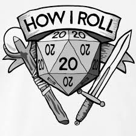
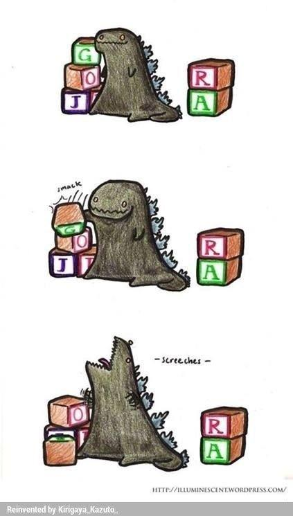
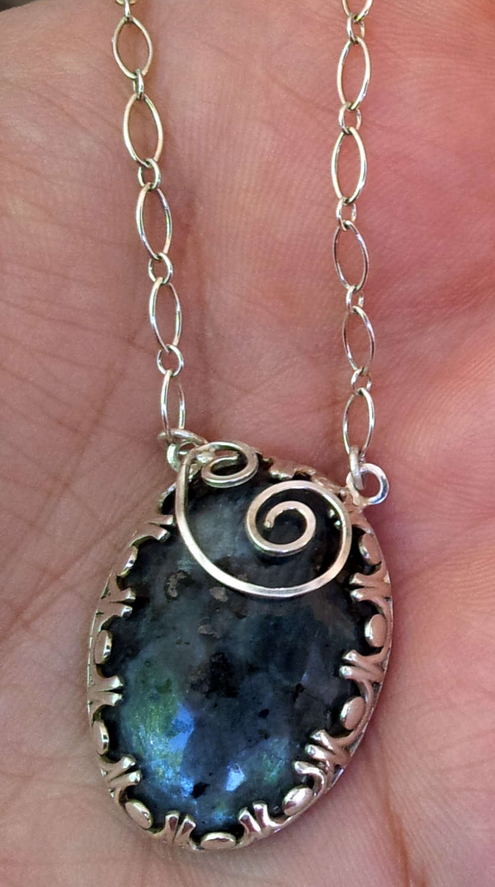
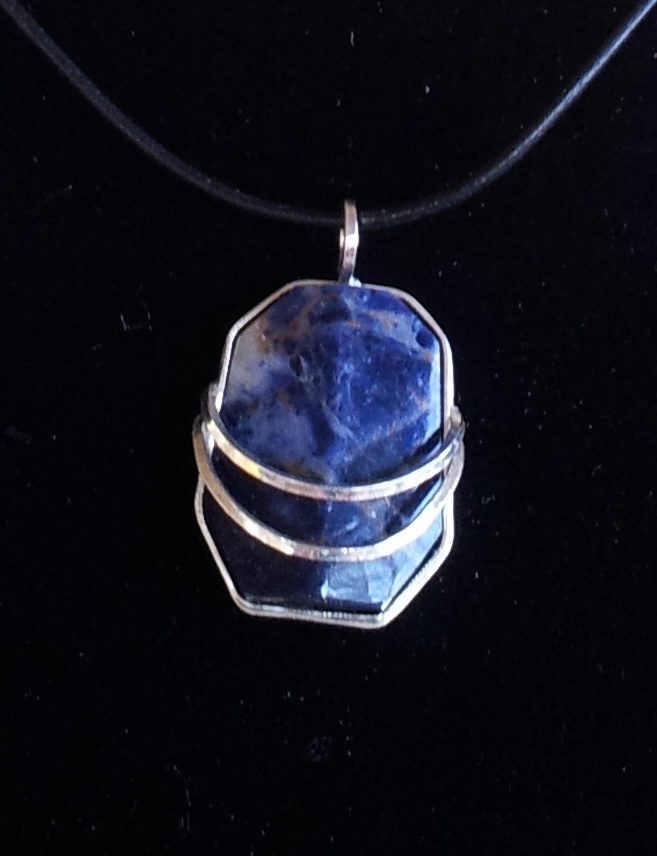

Affinity Homes KC is a single family home construction business. I have worked for Affinity Homes off and on for the last 11
years. I am currently doing book keeping and IT. In the past i have done construction, construction site clean up and final
cleanup that is done before sale of a home.
Multipub
Multipub is a subscription tracking & accounting software. At Multipub I was a software support analyst/trainer. I trained
clients and personel on how to use the software. In addition to training I did troubleshooting for clients. I also handeled
conversions, data retrieval and corrections.
Terracon/GSI/Geotech
<
Terrcon is an engineering and constuction materials testing firm. While there I did concrete, rebar and soil testing. I had to
be able to read plans and accuratly record testing findings. I also have experience with Ground penetrating radar, seismic
testing, cone penetration testing and core drilling.
Contentinetal Cement Co
Contentiental is a cemet company in my hometown. I was a laborer, gounds keeper, heavy equipment operator and clean up schmuck.
Most of my time there was spent cleaning up other peoples messes. I was however able to work my way through collage.
Pizza Hut
Pretty self explanitory, was a cook and a closer. It was my highschool job that I had so I could pay for a car, gas, insurance
and stuff I didnt need.
Misc
Over the years I have had a number of miscelanious jobs to make money or between other jobs. I have done roofing, remodeling,
yard work and been a restocker.
Hobbies
Gaming
I am an avid gamer. I mostly play PC games but I also play Switch or PS4. There are a few board games that I enjoy. For example
Zombicide is a co-op survival game. In collage I spent probably way way too much time playing roleplaying games like DnD

Movies
I enjoy sci-fi and fantisy movies. I particularly enjoy kaiju films like Godzilla and Gamera.

Rock Cutting
Sometimes I will cut and poslish rocks for my wife to make into jewelry. I have also make a pair of jade chopsticks and stones to
insets in a crown for a reenactment group.

Moonstone Pendant

Sodalite Pendant
Goals
Through launch code I hope to gain the skills so I can develop some applications that I have had ideas for. As well as obtaining a job
working with databases.